TeXShop 6.00
In preparation · Try the latest beta
TeXShop 6.00 follows TeXShop 5.59. It adds a new Find panel, LaTeX-aware spell checking, pinned link previews, a new Settings window and a status bar, and fixes many problems.
Main changes
- Advanced Find panel: a new Find panel with regular expressions lists every match and does multiple replacement.
- LaTeX-aware spell checking: check the spelling of the text alone, skipping TeX commands and mathematics.
- Pinned link previews: pin a link preview with the Option key.
- Settings window: a new Settings window with a sidebar and a search field.
- Status bar: the lines, characters and words are shown under the source.
Advanced Find panel
- A new find and replace panel with regular expressions, the Advanced Find panel.

- Find All lists every match.
- Highlight All marks every match in the text.
- Multiple Replace applies saved sets of find and replace pairs at once.
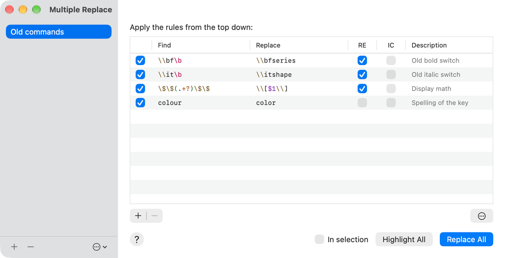
- A cheat sheet shows how to write regular expressions.
- Find also works in the console, the log and the Experiment windows.
LaTeX-aware spell checking
- Check the spelling of the text alone, skipping TeX commands, comments and mathematics. Suggested by Ralph Martin.

- Arguments that are not prose, of the commands of common packages, are not checked. Provided by Ralph Martin.
- The arguments of
\newtheoremstyleof amsthm are not checked. Suggested by Herb Schulz and contributed by Ralph Martin in PR #40. - Parts of a document in another language can be checked too.
- Change All corrects a word throughout the document.
- Click a suggestion in the spelling panel to use it for Change All. Proposed by Ralph Martin.
- The dictionaries in Settings → Spell Checking are listed by the names of their languages. Reported by Herb Schulz (#32).
- Spell checking is faster in long documents.
Preview
- Pin a link preview with the Option key, and move or resize it. Suggested and reported by Uwe Schmock (#10, #14, #35).

- Link previews are easier to read. Suggested by Uwe Schmock (#7, #12, #14).
- Link previews show the page number of the target. Suggested by Uwe Schmock (#17).
- Hold Control over a link to turn its preview on or off. Suggested by Uwe Schmock (#30).
- Split Window with Link shows a link’s target in the other part of the window. Suggested by Uwe Schmock (#31).
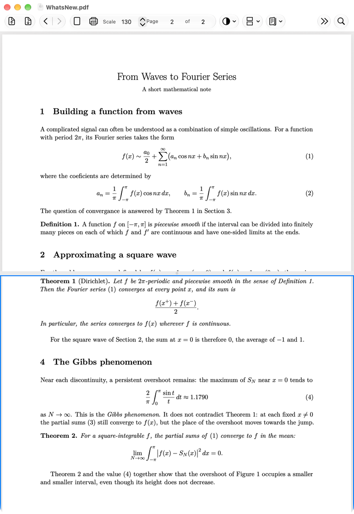
- Zoom to Content Width fills the window with the text of the page. Suggested by Uwe Schmock (#33).
- Page layout menus can be added to the preview toolbar.
- Switch Views exchanges the two parts of a split Preview window. Suggested by Uwe Schmock (#25).
- A split Preview window shows which part is active. Suggested and reported by Uwe Schmock (#14, #25).
- The single window opens with the divider where it was last. Suggested by Felix Finster (#26).
- The outline in the drawer stays as it was when the document is typeset again. Suggested by Uwe Schmock (#19).
- Scrolling can be set not to turn pages. Suggested by svb-bit (#9).

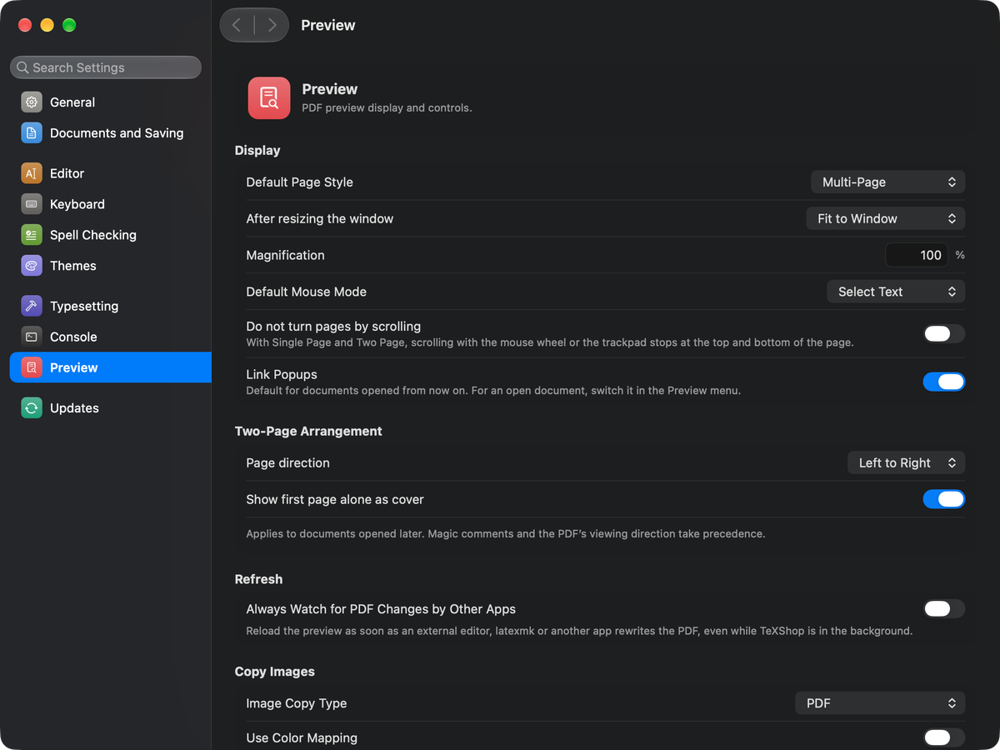
- When another application such as latexmk rewrites the PDF, the preview is updated at the same place.
- The magnifying glass works at any magnification. Reported by svb-bit (#9).
Editing
- Command-0 shows the document’s console. Suggested by Nicolas Martignoni (#2).
- Click or drag over the line numbers to select whole lines.
- Character Type Conversion in the Edit menu converts between hiragana and katakana, fullwidth and halfwidth, and more.
- Unicode Normalization in the Edit menu normalizes the selection.
- Swap with Clipboard in the Edit menu exchanges the selection and the clipboard text.
- Macros and key bindings can insert the clipboard text.
- The Macro Editor has a new design with a sidebar.
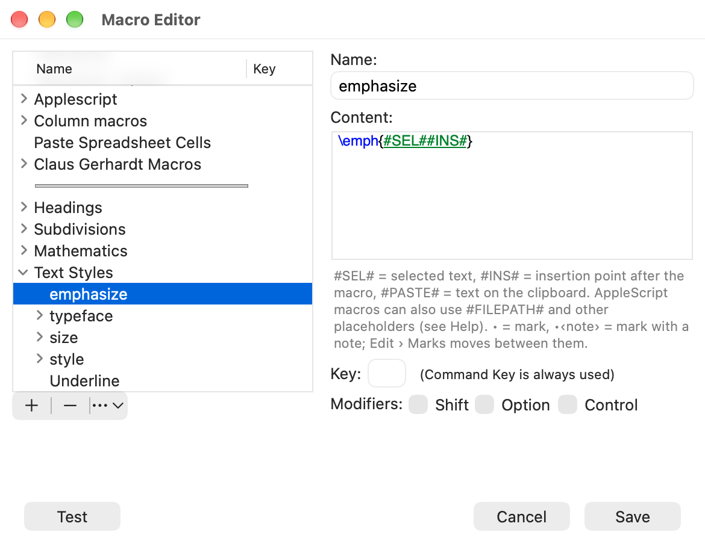
- Fullwidth letters, digits and symbols can be shown in their own color.
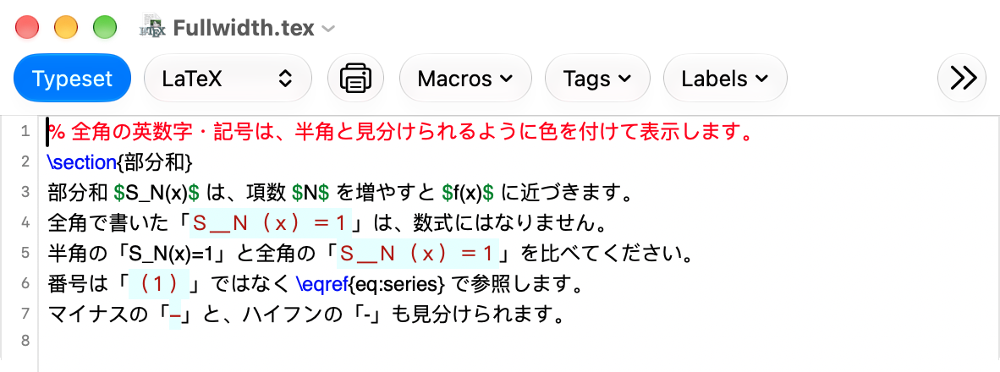
- The encoding of a source file is detected automatically.
- Experiment typesets with the document’s pictures and references. Suggested and reported by Uwe Schmock (#8, #20).

- The Experiment source looks like the document’s source.
- The Tags menu is always up to date.
- Character Info shows details of a character, such as its Unicode name and version.
Settings window
- Settings has a sidebar with ten categories: General, Documents and Saving, Editor, Keyboard, Spell Checking, Themes, Typesetting, Console, Preview, and Updates.
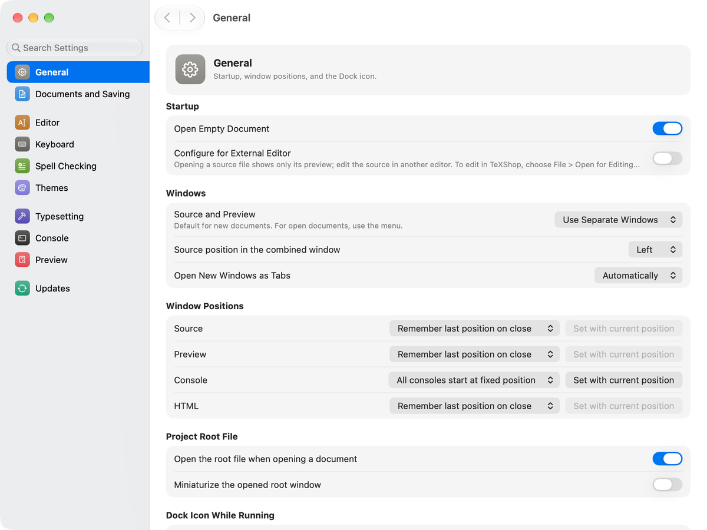

- Search Settings finds a setting.
- Detect Paths… sets the TeX and Ghostscript installations automatically.


- The index program and MetaPost can be set.

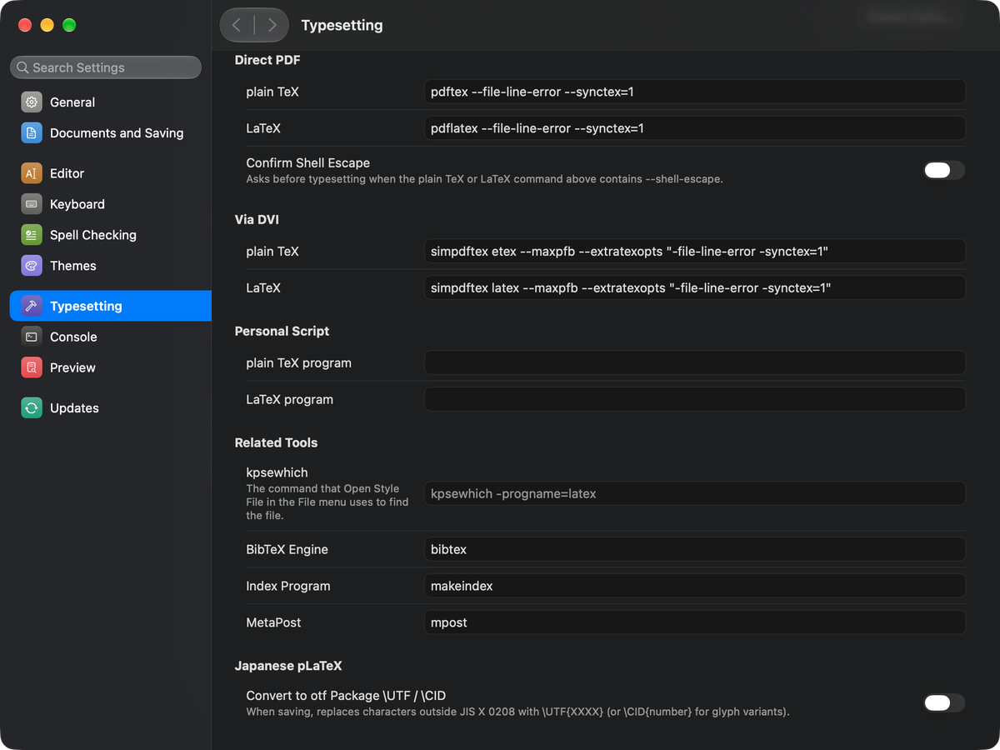
- Change the shortcut of any menu command in Settings → Keyboard.


- Edit key bindings in Settings → Keyboard.
- Settings → Updates can include betas.
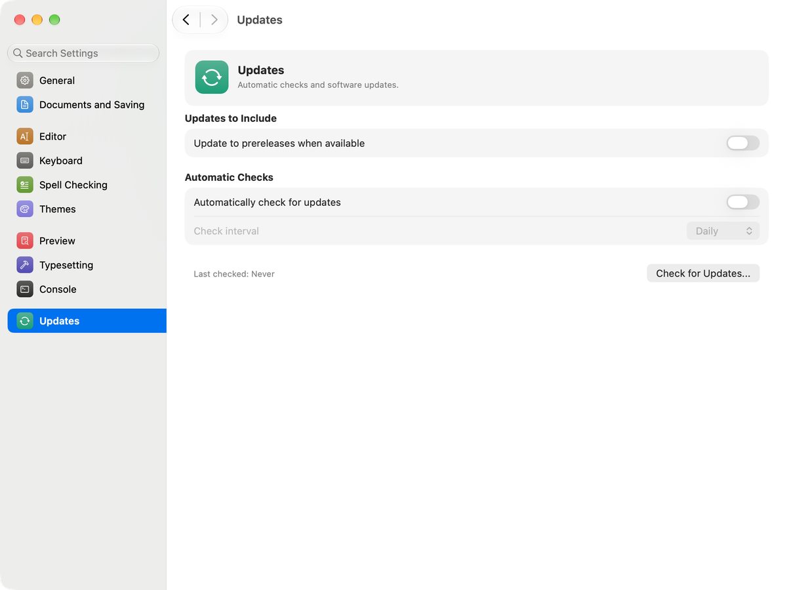

- Autosave and Versions can be turned off.
- The first page can be shown alone as a cover in two-page layouts.
- Syntax coloring can treat @ as part of command names.
- expl3 coloring can be on when a document opens.
- Choose the markers for invisible characters from menus.
- Window opacity can also be typed as a number.
- General links to Comment Lines and Hidden Settings.
App icon and appearance
- A new app icon. Suggested by LaTeX fetishist and Nicolas Martignoni (#3).
- The Dock icon while TeXShop is running can be one of the earlier designs. Suggested by LaTeX fetishist (#3).
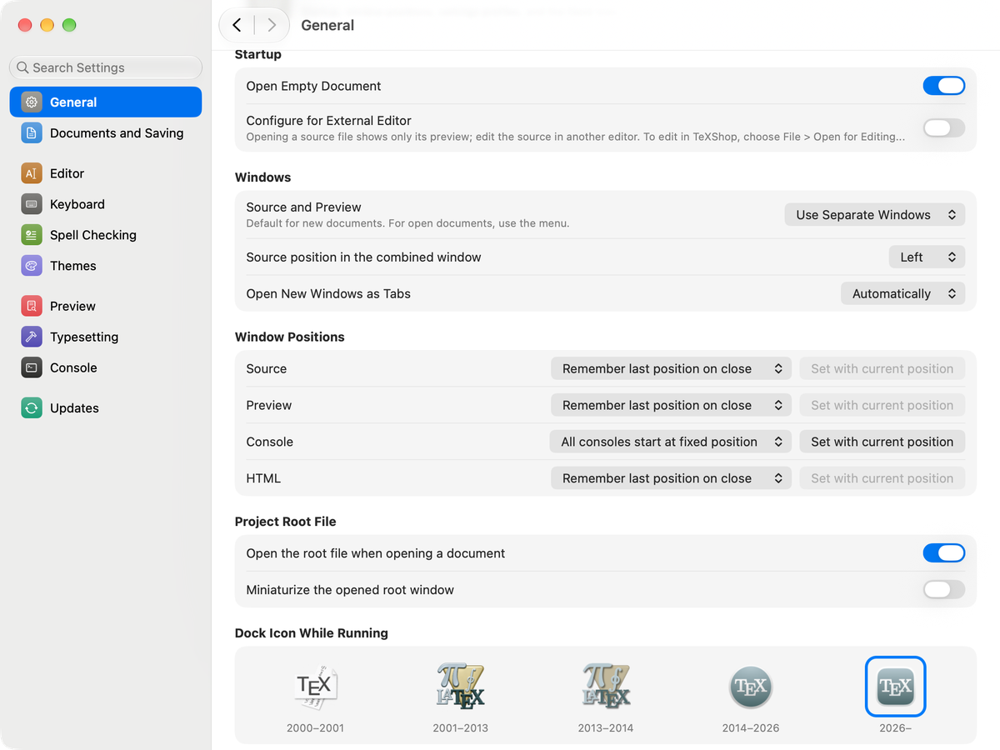

- On macOS 26 and later, TeXShop has the Liquid Glass appearance.
- The buttons of the preview toolbar have the icons of Apple’s Preview. Suggested by Bruno Voisin.
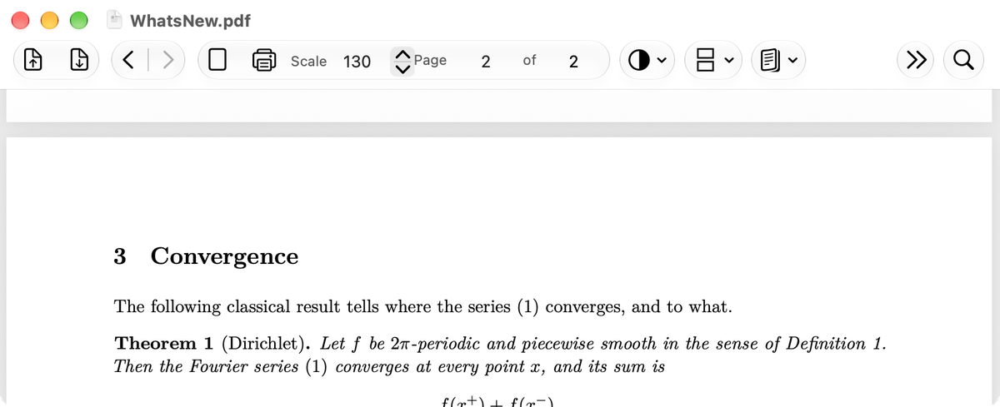
- The buttons of the preview toolbar have tool tips. Suggested by Uwe Schmock (#28, #34).
- The digits of line numbers line up.
- The Matrix and LaTeX panels are easier to read in Dark Mode.
Changes in behavior from earlier versions
- Spell checking: LaTeX-aware spell checking is on by default. The legacy method is in Settings → Spell Checking.

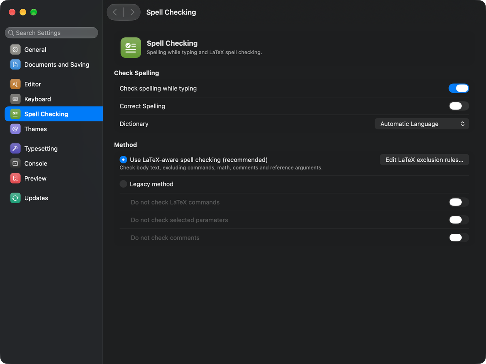
- Find: the Advanced Find panel is used by default. The earlier panel can be chosen in Settings → Editor → Find Panel.
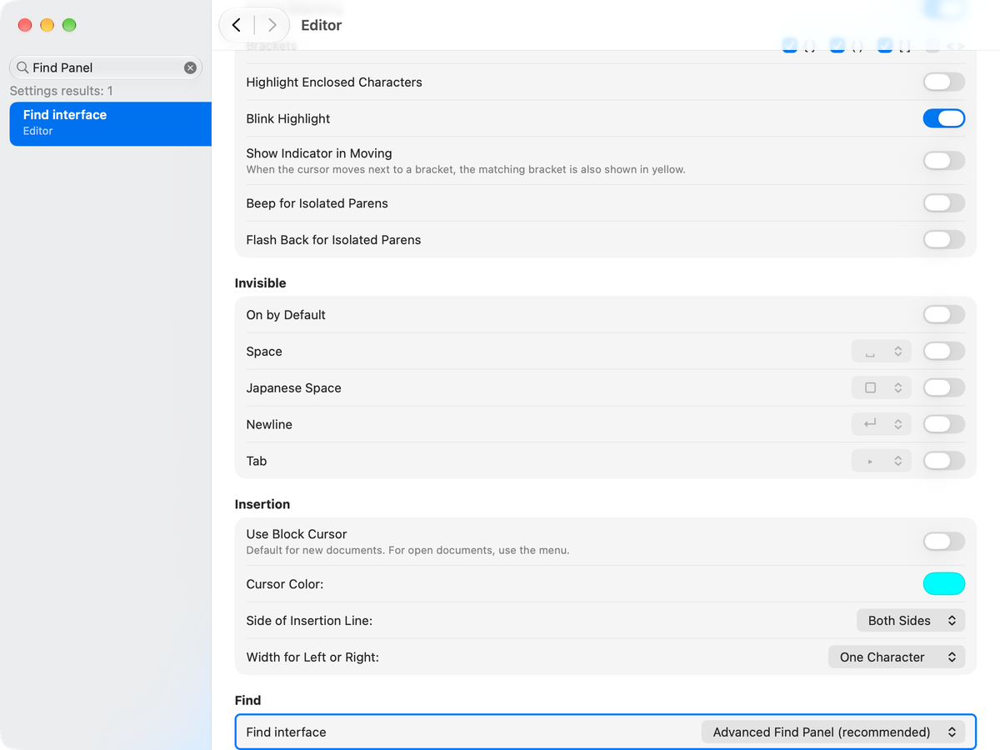
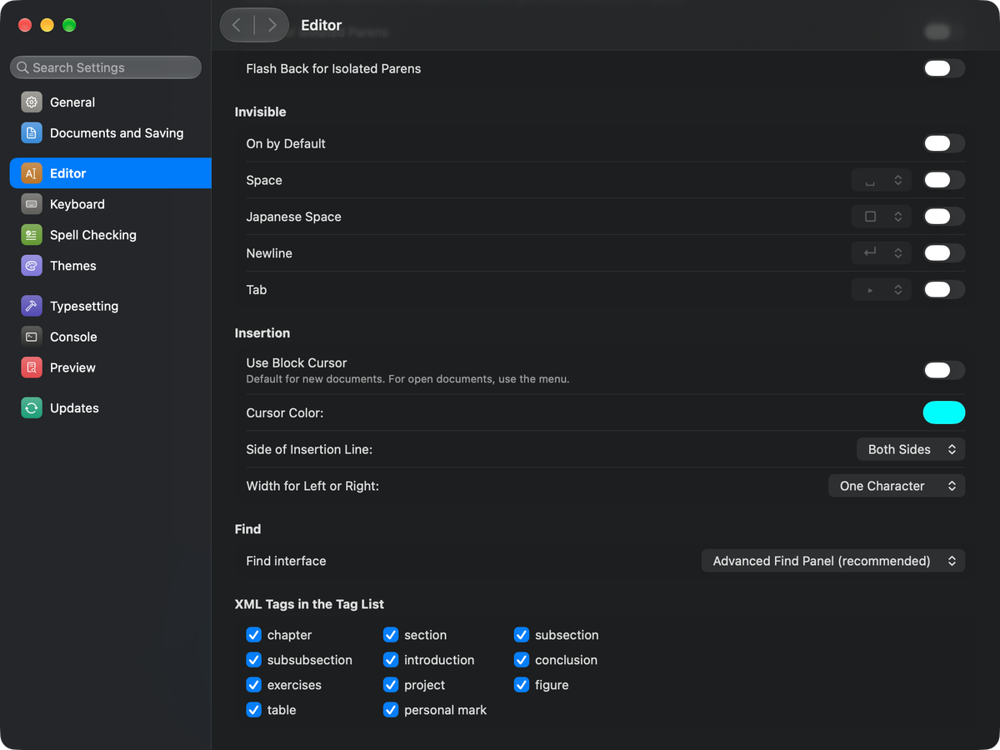
- Settings profiles: settings profiles are replaced by engine profiles in Settings → Typesetting. Choose a profile to set up typesetting for that TeX engine in one step.


- Typesetting settings: Default Command is now Typeset New Documents With, and Command to use is now Engine File.
- Arrow keys in the preview: in single-page and two-page layouts, the Up and Down Arrow keys scroll within the page instead of turning it. Suggested by svb-bit (#9).
- Menu shortcuts set in macOS: shortcuts for TeXShop made in macOS System Settings may need to be set again in Settings → Keyboard.
- Macro shortcuts: macro shortcuts are set in the list of the Macro Editor.
- Marks: the mark commands are in Edit → Marks.
- Command completion: the Command Completion submenu of the Source menu is now one item, Add to Command Completion List.
- Open Style File: it has moved from the Help menu to the File menu.
- Smooth text and line art: this setting is removed.
- Save PostScript File and -dALLOWPSTRANSPARENCY: these settings are removed.
- Obsolete settings: settings that had no effect are removed.
- Themes from earlier color settings: this button in Settings → Themes and the macro Colored source are removed.
\UTFcommands:\UTFcommands of the otf package are turned back into characters when a file is opened.- Line endings: opening a file with Windows or other line endings tells you that they were changed to LF.

- Statistics: Edit › Statistics… opens Text Statistics in the status bar.
Fixes: typesetting and the console
- Critical fix: Stop now ends TeX; before, TeX kept running.
- Console output can be copied while TeX runs.
- Console output and logs with broken characters are shown correctly.
- Command-1 returns to the file typeset with
% !TEX root. - Stopping no longer hangs when a typesetting tool cannot start.
- TeXShop tells you when the root file cannot be found.
Fixes: preview
- The preview no longer moves after reloading or turning pages on macOS 26 and 27. Reported by svb-bit (#9).
- Splitting and Switch Views no longer make the Preview creep. Reported by Uwe Schmock (#23).
- Dragging the divider of a split Preview window no longer moves the text. Reported by Uwe Schmock (#24).
- Parts of the linked page no longer show around a link preview. Reported by Uwe Schmock (#21).
- Reopening the preview during typesetting no longer changes its position. Reported by Uwe Schmock (#5).
- Pages in the preview take the theme’s color again. Reported by ethanphil4-a11y (#39).
- SyncTeX goes to the place clicked.
- Fix a crash while the preview reloads.
- Space scrolls correctly through large pages.
- In Dark Mode, a split Preview window no longer shows a light band.
Fixes: opening and saving documents
- The cursor no longer jumps while editing files synced by OneDrive, Google Drive and similar services. Reported by Steuard (#29).
- Document windows open again in Romanian. Reported and suggested by Tom (#42).
- TeXShop notices changes to a source file after other editors save it. Contributed by Daisuke Nishihama in PR #1.
- UTF-8 files with a byte order mark and UTF-16 files are saved correctly.
- GB 2312 files are read correctly.
- The backslash and the tilde are saved correctly in Japanese encodings.
- The encoding menu in the Save dialog works.
- Automatic UTF-8-Mac to UTF-8 Conversion no longer saves an empty file.
- Conversion to otf package
\UTF/\CIDno longer loses line breaks. - Make Default Editor works for
.texfiles.
Fixes: editing and other
- The spelling panel shows the misspelled word in long documents. Reported by Herb Schulz (#38).
- A
% !TEX spellcheckline no longer changes the language of other documents. - Fix the coloring after a line break in a comment. Reported by Uwe Schmock (#16).
- An unclosed argument no longer removes the colors of the rest of the text.
- Typing Japanese no longer slows down.
- A form feed no longer hides the rest of the document.
- Long documents are faster to show and edit.
- Left alignment is kept in right-to-left paragraphs.
- Splitting the source in the single window divides it evenly.
- The Home URL of the HTML window works.
- Text is no longer cut off or drawn over other text in any language.
- Fix buttons and menus that did not work in some languages.
- Texts left in English are translated.
- Fix a crash in the Matrix panel.
Manual, help and bundled tools
- Update the manual’s RaiseHook example for current hyperref, following Uwe Schmock’s proposal (#6).
- The manual and the help point to the current TeXShop web site, texshop.app. Suggested by Uwe Schmock (#15).
- Remove Skype from the manual. Suggested by Uwe Schmock (#11).
- The contact information in the credits points to the current maintainer. Reported by Ralph Martin (#13).
- Add help for LaTeX-aware spell checking.
- Update the bundled zlib to 1.4 and the SyncTeX parser to 1.21.
- Update the bundled latexmk to 4.89, provided by Herbert Schulz.
- TeXShop can be built from an extracted source archive again (#4).